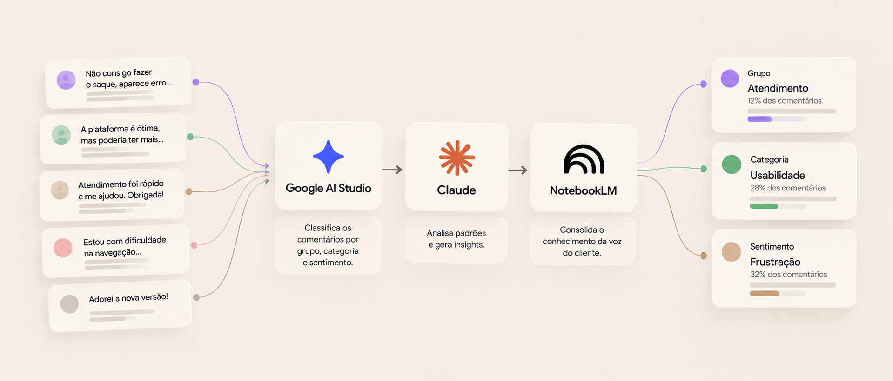
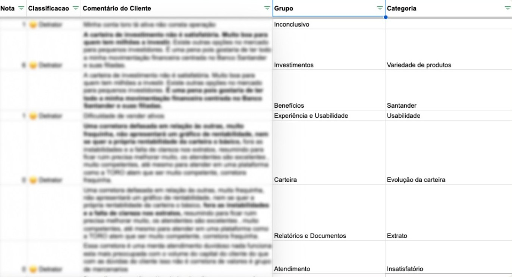
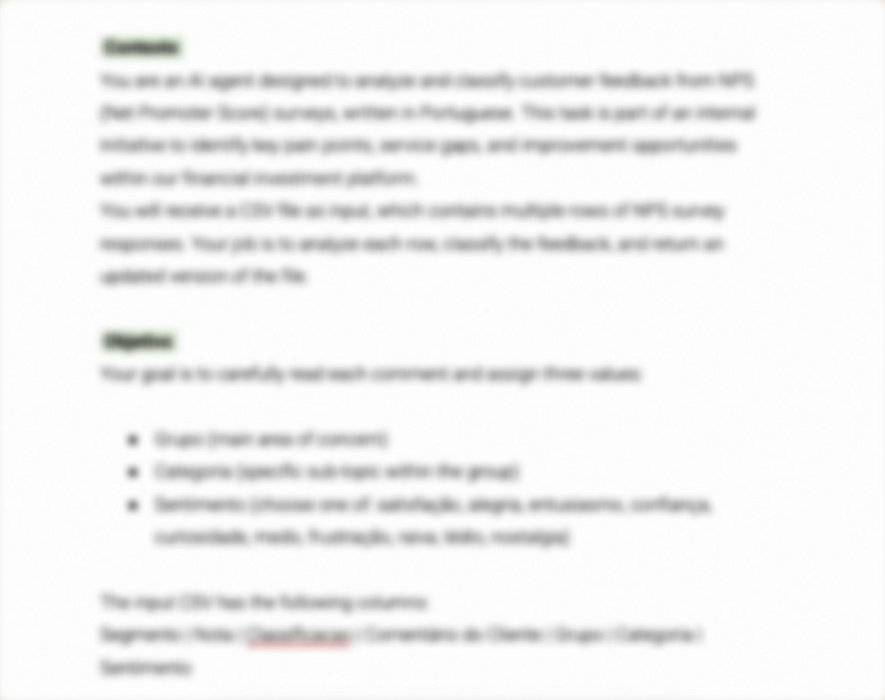
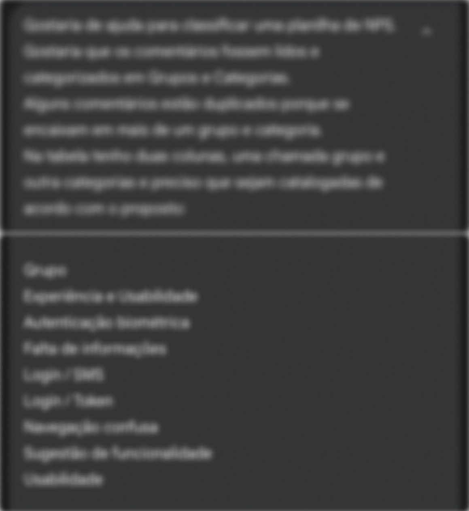
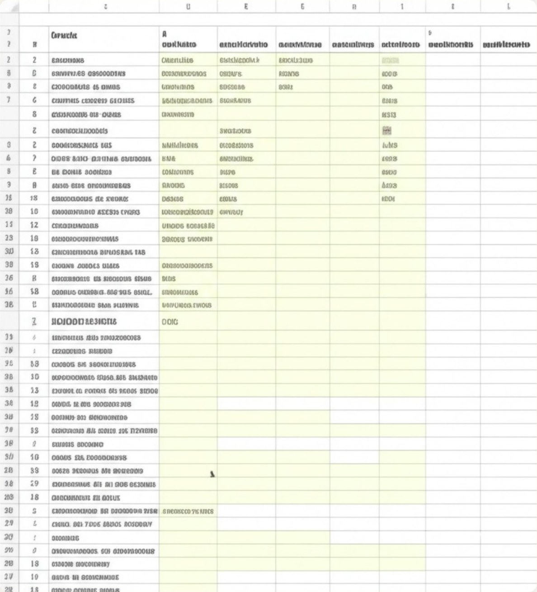

Case 01toro investimentosautomatização do nps
NPS com IA
Transformei um processo manual e recorrente de classificação de feedbacks em um fluxo apoiado por inteligência artificial, reduzindo o esforço operacional e ampliando as possibilidades de análise da voz do cliente.

Representação do fluxo. Os comentários e percentuais exibidos são dados ilustrativos.
01Contexto e problema
Muito tempo classificando. Pouco tempo analisando.
Toda semana, os comentários de NPS eram lidos e classificados manualmente antes de qualquer análise começar.
Classificação manual- 01Leitura e classificação 100% manuais.
- 02Processo semanal e repetitivo.
- 03Dificuldade em manter a rotina atualizada.

02Solução e experimentação
Da classificação manual a um fluxo com IA.
A proposta foi automatizar a classificação do NPS usando o Google AI Studio, com entrada via arquivo CSV. A IA lê, interpreta e classifica os comentários em:
- Grupo
- Categoria
- Sentimento

A IA precisa ser treinada, o prompt é esse treinamento.
- Contexto
- Quem é a IA, o que é o produto, qual o objetivo do projeto.
- Objetivo
- O que exatamente a IA deve classificar e como devolver o resultado.
- Regras
- Limites, restrições e como tratar casos ambíguos.
- Exemplos
- Amostras reais de classificação correta para calibrar a resposta.
Mais contexto = melhores resultados.
Iterações
Os primeiros resultados não eram consistentes. O prompt passou por testes e ajustes até a classificação se tornar coerente.


03Evolução
Classificar era só o começo.
Com a classificação automatizada, o fluxo ganhou novas etapas: cada ferramenta assumiu um papel, da organização dos comentários ao acesso aos dados.
-
01 · Classificação
Google AI Studio
Classifica os comentários por grupo, categoria e sentimento.
-
02 · Análise
Claude
Aprofunda a análise: identifica padrões e tendências, reúne os principais insights e sugere ações por categoria.
-
03 · Acesso aos dados
NotebookLM
Consolida os relatórios em uma base de conhecimento interativa, onde designers, PMs e stakeholders fazem perguntas e obtêm respostas baseadas na voz real dos usuários.
O prompt da análise é refinado de acordo com a análise a ser feita: quanto mais contexto do produto e do objetivo da análise, melhores os insights e acionáveis.
As informações sensíveis são removidas antes do envio dos arquivos às ferramentas de IA.
Esse processo é aplicado tanto para o Google AI Studio quanto para o Claude.
- 01Dados brutosArquivo original com todos os campos.
- 02Remoção de dados sensíveisQualquer dado que possa identificar o cliente.
- 03Arquivo limpoApenas nota, classificação e comentário permanecem.
- 04Upload para IASem dado pessoal.
04Resultados
Menos esforço operacional. Mais espaço para gerar insights.
~4hAntes, por semana
~5–10 minCom IA, por semana
A classificação passou a ser automática, com redução significativa do esforço manual.
Com menos tempo dedicado a classificar, abre-se espaço para aprofundar a análise da voz do cliente e apoiar decisões de produto com mais contexto.